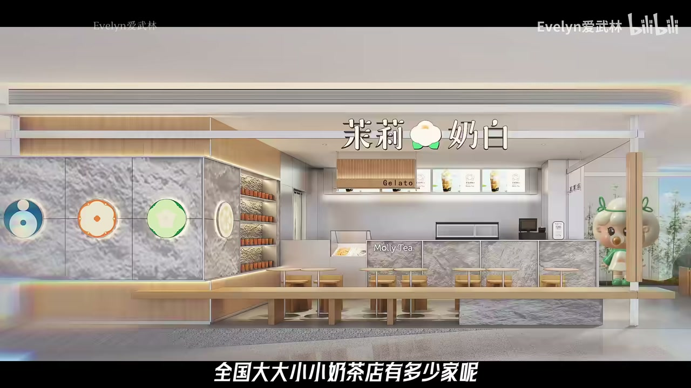
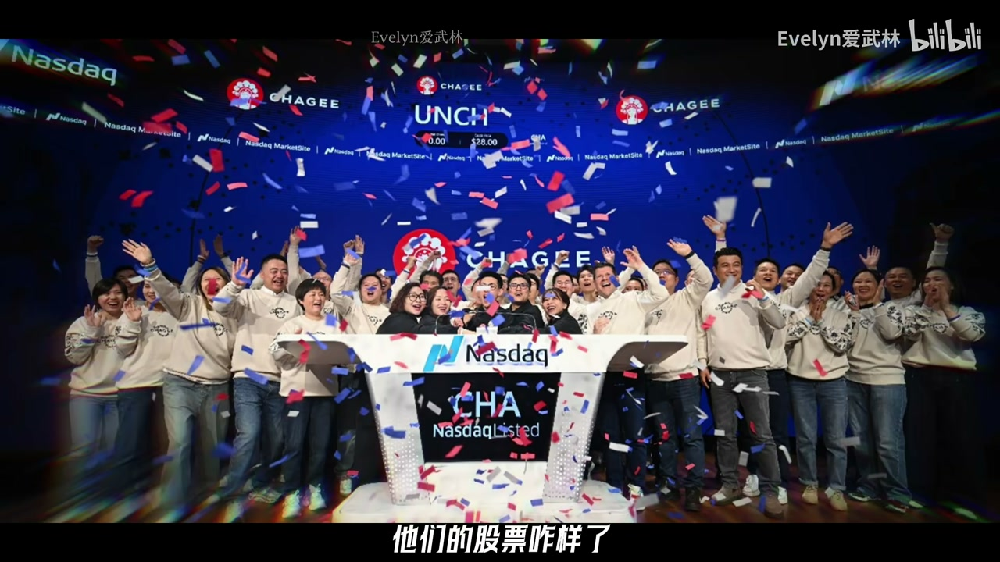
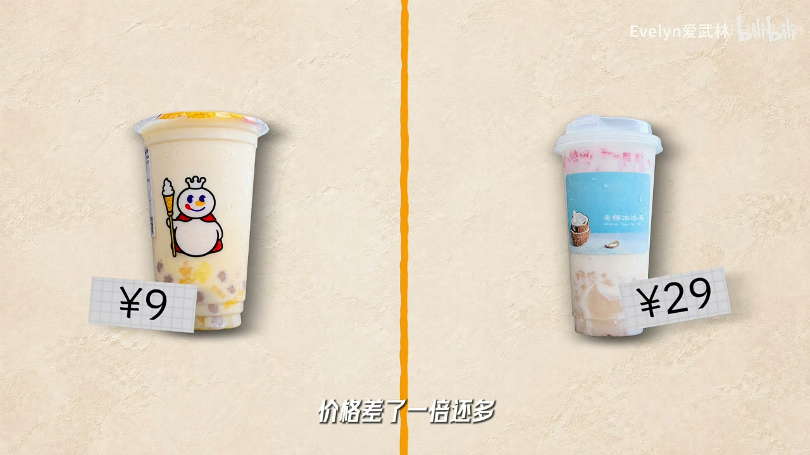
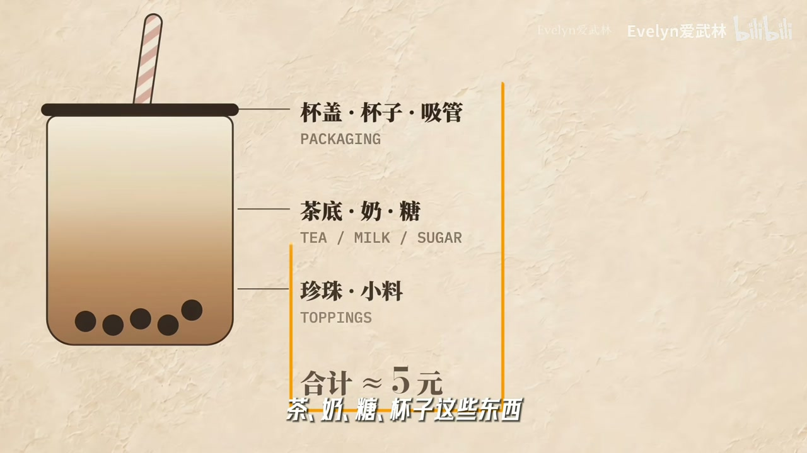
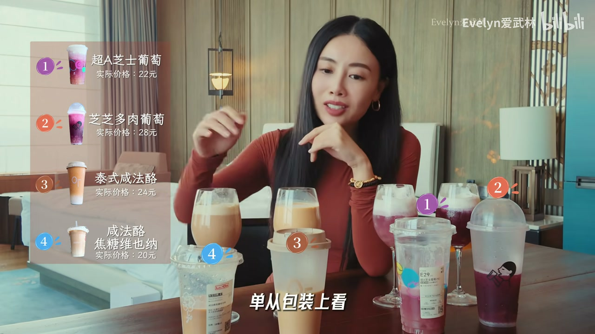
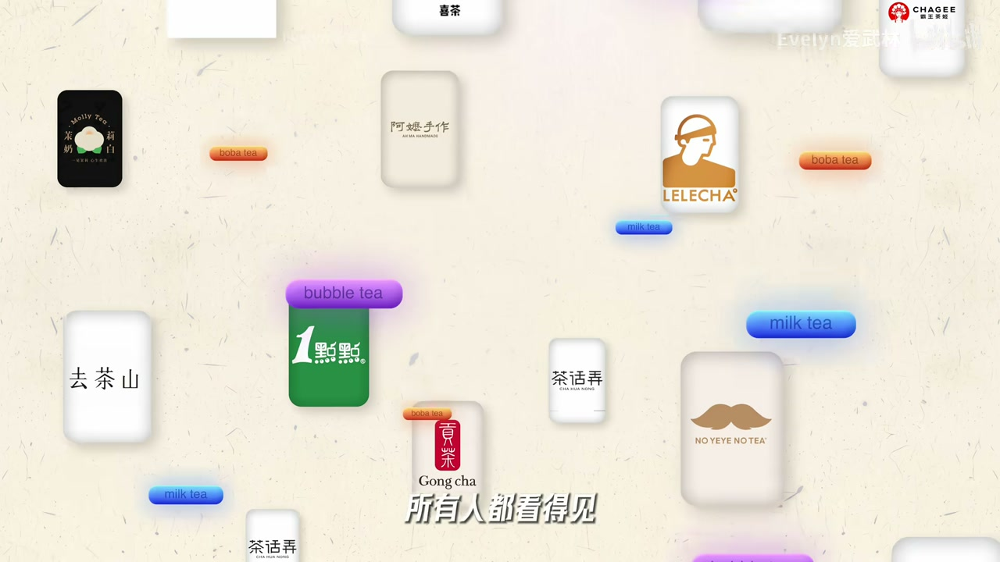
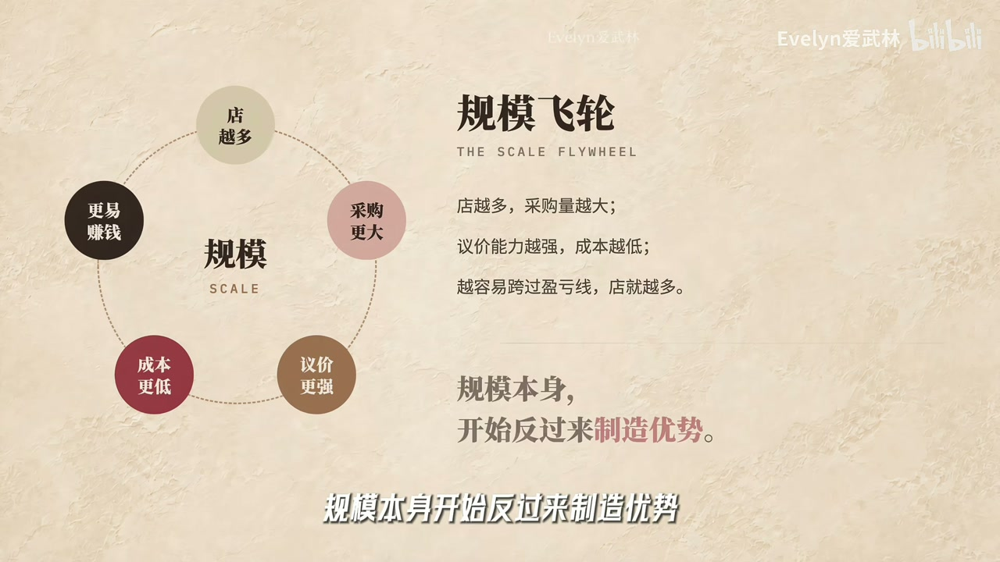

内容要点
高复购、高上新、账面毛利诱人，但毛利≠利润；经营杠杆要求过盈亏杯数。产品易被供应链复制，品牌忠诚不排他；做大要同时像产品/品牌/零售/供应链/加盟平台。
知识结构
盘大店多上市公司；盲测贵≠更好喝，价格参与制造感知。
原料可共享；毛利不是利润；每日杯数过线才赚钱。
忠诚不排他；密度+供应链+加盟才拼出浅护城河。
一杯好做，一店很难，万店要系统；问护城河有多深，别只问毛利率多高。
00:00-05:30开10关13与盲测贵贱
茶饮盘约 3600 亿、品牌三千+、门店近 45 万、已有多家上市；高频上瘾、一年两千多新品、杯子里原料看起来不贵——像印钞机。然而同年开关倒挂，上市茶饮股也从巅峰回落：好品类为何这么多人亏钱？
盲测几轮：猜贵贱经常对不上；行为经济学说明标价本身参与「好喝」的脑补。贵的溢价买的可能是原料，更可能是房租装修外卖与品牌社交——杯子里的钱、送到手里的钱、脑子里的钱要分开算。



05:30-12:30上新内卷、毛利≠利润
茶底能喝出差别，却难喝出「谁原料更贵」；从升级到愿多付 10 块隔着感知与品牌。上游果汁果浆茶底小料高度共享，新品两三个月生命周期，产品是入场券不是护城河——停更比偶尔爆款更危险。
15 元成本 5 元不等于稳赚 10 元：古茗披露加盟单店利润率约两成已算优秀，多数街边更低。固定成本（租人工设备加盟费）是经营杠杆，举例固定开支 2000、每杯贡献 10，约 200 杯才回本——卡在线附近，两杯之差就是亏赚之别。多卖或降本两杠杆都难，大单品如霸王茶姬也难逃同店下滑。

12:30-20:08密度、飞轮与「有些」护城河
第三轮亮品牌：口味偏好会被包装改写，类似可乐百事扫描实验。但茶饮忠诚不排他、切换成本接近零——固定喝一两家的不到一成。于是必须同时像产品公司、品牌公司、零售选址公司、供应链公司；加盟模式下还要对加盟商负责。
蜜雪万店级密度、古茗区域深耕到省内数百店，才谈得上规模降本与飞轮。柜台外看似摇一摇，万店要算清成本与单店效率。结论：品类很好，单店很苦，总部系统才可能有「有些」护城河——深浅留给观众自判。



完整转录（554段）
Whisper 转录；已校正：茶饮、古茗、茶百道、沪上阿姨、霸王茶姬、同店 GMV、护城河、百事悖论等。
每开10家就有13家关门啊
每天亏16000
一共损失了40万
天呐 这里面有茶吗
有一点吐吐的味道在里面
哎 你这一周喝几杯奶茶了
2025年的中国茶饮市场
是一个3600亿的超级大盘子
3600亿什么概念啊
智能手机市场一年大概1万亿出头
那手机几千块钱一台
你可能两三年才换啊
奶茶呢 十几二十块钱一杯
愣是干到了手机市场的差不多三分之一
那大家可以猜猜啊
现在市面上有多少奶茶品牌了
超过3000个
好 那么有了这个参照
咱们再猜猜
全国大大小小奶茶店有多少家呢
近45万家
有时候一条街逛下来
恨不得满眼全视啊
那这行业红火到什么程度啊
已经跑出了6家上市公司
哎 这门生意乍一看真的很完美啊
首先它高品
很多人的刚需容易上瘾
而且花样迭代一个多呀
什么
芝士多肉葡萄
鸭屎香牛蒙茶
稚子花青乳茶等等
名字一个比一个玄乎
那卷到什么程度呢
2025年有机构跟踪了75个茶饮品牌
一年推出了2691款新品
平均一个品牌一个月得砸出三个新品啊
而且毛利也挺诱人的
你说一杯奶茶动辄十几二十块
感觉成本上不就是那些奶呀茶呀
还有什么杂七杂八的配料吗
高品 花样多 毛利厚
哎 这感觉就是印钞机级别的黄金赛道
对吧
不过呢 朋友们
你有没有好奇过
这些奶茶店他们都赚了多少钱呢
2025年新开了大概10万家茶饮店
可同一年关了多少家呢
13万家
就是说每开10家就有13家关门啊
咱们再看看那几家上市的奶茶巨头
他们的股票咋样了
好几家 初到极巅峰
哎 这就特别有意思了
一个这么多人爱喝毛利后
市场还巨大的好品类
这么多人都在亏钱 是怎么回事啊
所以今天咱们就好好地盘一盘
这奶茶里的生意精
好喝的和难喝的
几块钱的和几十块钱的
到底有什么差距
咱们看看能不能从下面几轮盲测里
把这门生意的弯弯绕给喝明白
那咱赶紧的第一轮
开磕
先说一下我平时真的是不怎么喝奶茶
所以今天真的是全裸烤
我们看看我今天真的能不能喝出
哪一杯便宜 哪一杯贵啊
咱们现在先开始第一杯
这个看起来非常像奶茶
挺好吃的
好像是有芋泥的感觉
清爽了很多
淡淡的那种芒果的感觉
觉得都有点像
你再来试一下
三杯 它有奶油和鲜果
完蛋 我本来想在这一杯是最便宜
哦 西瓜
然后它好像不是普通的珍珠
这杯也非常的清爽
这个是最贵的吗
这个是29的
这个是9块的
我觉得这两款
可能这个茶的味道更多一些
这款是相当清爽的
基本上就是我觉得像奶加了一些水果的感觉
这个可能是15块以下的
然后这个是15块以上的
我想知道 先知道这一杯的价格
下一杯我想知道这个吧
因为它确实就奶
然后就是水果
它是多少钱 这个
29块钱
所以它是最贵的吗
对
man
好 这就有点意思了
我猜出来的价格和时期售价
并没有完全对上
贵的牌子一撕 包装一巴
也没有好合出两三倍来
但这事其实挺正常的
行为经济学里面有个著名的实验
同一款酒分别贴上不同的标价
只要一听这杯卖的贵
大脑就跟自动开了美颜似的
什么果香年份 优肠伟愿
全都脑补了出来
那更有意思的是
研究人员扫了大脑以后发现
你还真不如装的
跟愉悦和价值判断有关的区域
反应是真的更强了
所以 贵的好喝
很多时候不是你喝出来的
是价格提前告诉你的
朋友 这杯可是好东西啊
那价格本身就在参与制造
感知价值
比如 平时你喝一杯几十块的奶茶
看到漂亮的logo
包装高档门店
再加上贵一点的定价
全都参与了好不好喝这件事
好 那么如果一杯几块
一杯几十块
价格差了一倍还多
但是杯子里的体验并没有差那么多
那么多出来的这些钱
你到底买了什么呢
分析消费品其实很简单
无非是这杯子里的钱
贵的是不是真的是
更好的茶 更好的奶
更贵更新鲜的原料呢
还有把这杯东西送到你手里的钱
房租 装修 人工 设备 外卖平台
同一杯奶茶在不同的地方
用不同的方式卖到你手里
成本可以差很多
那还有最后是你脑子里的钱
品牌 信任 审美 社交
所以咱也先别急着说
贵就是智商税啊
咱们往下看
我先前三个啊
我来试一下
茶底的口味上
区别还是蛮明显的我觉得
就这两个应该是一样的
好像是
应该是
是茉莉花吗
这两款虽然是同一个茶底
都是茉莉花
但是我觉得我也很能喝出来区别
这款的茉莉花的
香味的浓郁更多一些
这个是更淡雅一些的
这个是更淡雅一些的
我个人愿意付更多的钱
去买哪一款的话
我觉得我应该是愿意买这一款的
我觉得这一杯里面
应该是有绿茶的吧
茶味更浓的
它比较清新一点
它除了绿茶之外
还有一种好像有点
有一点土土的味道在里面
这个它是奶味更重的
如果是乌龙茶的话
它和奶的这个混合
把茶味盖掉了一点
按我的喜好
我就可能选这一杯
它是我愿意用更贵的价格去买
好 这轮也很有意思
仔细喝区别当然是有的
有的茶香更明显
有的更顺
层次确实会更丰富一点
但是我能喝出它们不一样
却很难光凭口味判断哪杯原料更贵
这两件事还真不是一回事
从原料升级到消费者真的能喝出来
再到消费者愿意为它多付10块钱
中间可隔着好几层呢
而且奶茶这个生意
就算你今天真的搞出一杯特别好喝的东西
别人学不会吗
现在新茶眼的上游供应量
已经成熟到了什么程度
给各大品牌做果汁果浆的甜野股份
翻开它的客户名单
耐雪 茶百道 沪上阿姨等等都在里面
也就是说
你在不同家喝到的果汁
很可能出自同一家供应商
那茶底 小料 糖浆
背后全是这样成熟的供应商
你能买到的
你的对手也能买到
所以经常是啊
今天茉莉火大家就一起茉莉
明天炙子火
半条街都开始炙子了
你辛辛苦苦卷出来的新品
可能确实能让你领先一阵子
但这个领先很难永远都属于你
那现在很多新品从上市到退市
整个生命周期可能也就两三个月
所以对奶茶来说
产品很重要
不好喝呢
你连上桌的资格都没有
产品呢 更像入场券
上不了桌是死
但上了桌可不代表你能赚钱
所以喝完两轮
你们有没有发现
我们一直说
奶茶 奶茶
说的好像都是杯子里面的东西
可真正决定这门生意的弯弯绕的
好像恰恰都是在杯子外面的东西
那还等什么
咱们赶紧去研究一下
这杯子外面的东西
也就是把这杯奶茶
真正卖到你手里的钱
我想很多人想开奶茶店
应该都是被高毛利给迷住了
一杯奶茶卖15块
假设茶 奶 糖 杯子这些东西加起来
算它5块钱
15块卖出去
成本才5块
这不有10块利润吗
6成多的毛利
但这里最容易骗人的
就是把两个东西搞混了
毛利不是利润
而且差的还挺远的
古茗上市的时候披露过
2023年他的加盟商单店经营利润
单店经营利润一年大概37万左右
利润率大概在20%
而这已经算行业里干的非常不错了
远高于行业平均
大多数街边奶茶店
利润率要比这个低不少
不超过15%
所以你脑子里想的那个6-7成的利润
想多了
真去开一家店
你会拿到一张长长的成本清单
房租 电源工资 设备折旧 水电
如果是加盟店
还有每个月交给品牌的费用
最上面那长长的一大截是
不管你今天有没有客人
也必须真金白银掏出来的钱
直到这张小票拉到了底
才是那几块钱的茶叶 牛奶 塑料杯
在财务上这叫经营杠杆
我们举个特别简单的例子
假设一家店每天房租 人工 设备
这些相对固定的开支加起来2000块
一杯奶茶卖20
扣掉原料 包材这些跟着销量走的成本
每卖一杯
还能留下10块钱去填这2000块
那么一天要卖多少杯才能打平呢
200杯
也就是说卖到200杯左右
今天这家店才刚刚回本
再往后每多卖一杯才开始真正赚钱
当然200杯只是为了讲明白这个原理
不是说每家奶茶店都是200杯才回本
但对一个刚好卡在这条线附近的店来说
第199杯和第201杯看起来只差两杯
却站在了亏钱和赚钱的两边
所以经营奶茶店不能只看每杯赚多少
更重要的是每天能卖多少杯呢
那很多小业主活不下来
就是一直没有打破这个盈亏平衡点
那怎么样才能破呢
其实无非两根杠杆
要么多卖
原来一天150杯
我想办法干到了250杯
那要么就是成本更低
别人卖200杯才回本
我160杯就够了
那这两件事儿听起来简单
做起来一个比一个难
比如说多卖
最直觉的办法当然是
我的东西就是比你的好喝
但是咱们已经连喝两轮了
产品之间当然有区别
好茶好奶也当然有价值
但你要靠一杯东西比别人好喝很多
还可以一直每天多卖100杯
那就太难了
今天你靠茉莉多卖了100杯
明天隔壁也能上茉莉
还记得吗
产品并不是天然的护尘盒
这行业难的不是偶尔做一个爆款
而是明年后年大后年
你还能不能每天比隔壁多卖那100杯呢
所以你现在能理解为什么前面我们说
那75个品牌一年能折腾出2691款新品
不停的上心
不一定能保证你赢
但你停下来大概率更危险
当然也有人不信这个邪
比如霸王茶姬主打经典款
伯牙绝弦走天下
好几个大单品一路干到了上市
2024年一年卖了差不多300个亿
这是大单品路线能做到的天花板了吧
但是呢
这可没有让他高枕无忧
从2024年第四季度开始
他的同店 GMV开始明显的下滑
今年第一季度同比仍然下降了16%
股价长期趴在了发行价的下面
连最能打的经典大单品
也是扛不住满大街的同质化和新品竞争
那你说
普通玩家只靠几款产品吃一辈子
可能吗
那除了上新联名找噱头
销量还能从哪来呢
就是离你近
你想喝的时候
你就恰好看到了它
顺手买了一杯
所以门店密度
位置本身就是竞争力
那不过说到这里
估计有人会不同意
那你说产品都差不多离得近就行了
我就喜欢茉莉奶白
旁边就算站着三家别的
我还是愿意买它
好
那这就出现了最玄乎的东西
品牌力
那到底什么叫品牌呢
这东西光讲可真没意思
走
咱们直接测
好
开始
这是什么水果呢
荔枝
梅子
这个好像是要酸味多一点
其实喝不出来这么区别
就是纯品第一感觉的话
我觉得我喜欢这个
这味道非常淡
奶的味道不是很浓
茶的味道也是淡淡的
我们来试试这个
这个浓郁一些
口味来说我可能喜欢这个多一点
这一组里面我选这个
而这一组里面我选这个
所以是这样的对应是吗
看到他们的包装和品牌之后
我还是可能会以口味来选
我还是更喜欢这个
是这样
那我
如果我没有任何尝这个
它本身的这个产品的话
单从包装上看
我就会选择这一款
这个包装有一些特色
它的这个盖子有一些特色
看包装的话
它也许会改变我的选择
那刚才我们看品牌的影响力
很早就有个经典版本
可口可乐和百事
叫百事悖论
那有实验发现忙喝的时候
人们可能更喜欢百事
可一旦把品牌亮出来
选择就开始往可口可乐那边偏
那后来有研究人员
干脆让人边喝边扫大脑
发现看到可口可乐标志的那一刻
大脑里跟记忆有关的区域
真的被点亮了
可口可乐这个标签本身
就在改变人的选择
那这就是强势品牌的特征
Logo过去喝过的记忆
广告 门店 朋友都在喝等等
这些挺玄乎的东西叠在一起
构成了你对品牌的感知
那奶茶是不是也一样呢
那一定程度上是的
刚才Logo包装一放回来
我们对几杯奶茶的感觉
可能马上就不一样了
但奶茶有个麻烦的地方
你喜欢我
不代表你非我不可
2025年有个消费者调查挺有意思的
超过70%的人说
自己平时会相对固定的喝一两个品牌
听起来忠诚度不错是吧
但是后半句是
偶尔也会尝试新品牌
真正只固定喝那一两个不太换的消费者
不到10%
那是特别像我自己
我可能喜欢茉莉奶白
但今天霸王茶姬出了个新品我会喝
明天古茗就在楼下我也会喝
后天朋友说另一家特别好喝
那就更得试试了
所以消费者对奶茶不是没有品牌偏好
而是这种忠诚很不排他
而且切换成本几乎为零
换手机我还得导照片
导通讯录重新学系统
那换奶茶呢
走进隔壁那家店就行了
这就解释了为什么这个行业会这么卷
你不能只把一杯东西做好
然后躺着收钱
产品会被跟
新品会过气
消费者会尝鲜
那到这里三轮都测完了
咱们盘一盘
前两轮我们发现
奶茶的产品差异化并不强
即使卷出了差异化
也很难形成长期稳定的领先
那第三轮我们发现品牌当然有价值
但奶茶消费者的忠诚远没有到非你不可
那现在你觉得奶茶
到底是不是一门好生意呢
它真是一个好品类
高频市场大能规模化
它拥有很多好生意的优点
也正是因为这些优点
所有人都看得见
这门生意天然红海
缺乏天然的护城河
于是你只能靠能力
一层一层的给自己造出护城河
首先你得向一家产品公司
不停的研究口味上新品
让消费者别喝腻
但产品好不够
你还得向一家品牌公司
让人下午三点突然想喝点什么的时候
第一个就想到你
可想到你也没用
附近没有也白搭
所以你又得向一家零售公司
选点位开门店提高单店效率
让消费者想喝的时候
身手就能够得着
可一旦开到几千家几万家
茶叶牛奶包材仓库冷链
怎么能稳定的供应到每一家呢
于是你又变成了一家供应链公司
而到这里你才刚刚摸到了护城河的门
所以你去看那些真正做大的品牌
都是特别强调门店密度的
比方说蜜雪
在国内已经4万多家门店
古茗虽然没有铺的那么大
但他喜欢一块区域一块区域的往后做
他甚至自己定了条线
一个省做到500家店以上
才达到关键规模
这其实就是规模效应开始发挥作用的意思
那我们前面说的跨越盈亏平衡点这件事
一边是多卖一边是降成本
那真正跨越了规模的门槛
这两件事才咬到了一起
更多门店帮你多卖
更大的规模又帮你降成本
成本更低再帮你继续扩电
那这时候规模本身开始反过来制造优势
才开始有一点真正的飞轮
而如果你走加盟模式那还没完
你还得向一家加盟平台
因为你的客户不止有喝奶茶的人
还有成千上万个掏几十万上百万
真金白银来开店的加盟商
那消费者得觉得这杯值得买
加盟商也得觉得这家店值得开
所以但凡能做大
还能经营的不错的品牌
他们都不是靠某一招吃天下
他们拼的是所有能力拼成的一整套系统
而任何一个方面的能力掉链子
规模越大甚至死的越快
那你现在再回头来看那些奶茶店的小老板
是不是觉得大家嘴里说的虽然都是奶茶
但压根不是一回事儿
对消费者来说
它就是一杯十几块钱随时可以买到的快乐
对一个普通奶茶店的老板来说
它可能是一门很辛苦
对位置和销量高度敏感的零售生意
每天都在琢磨那钱200杯到底卖不卖得出去
而对一个真正建立起品牌
门店网络供应链和规模优势的总部来说
奶茶才有可能慢慢变成一门有些护城河的好生意
所以我说的是有些
护城河也分为三六九等
消费者还是能换品牌
产品还是会被抄
竞争对手还是天天在你的旁边开店
那这个护城河到底算不算深呢
就留给大家自己判断了
这可能也是这个行业最有迷惑性的地方
你站在柜台外面看
茶奶糖加点冰摇一摇
这么简单的事儿有什么难的呢
但你真的从一家店做到一万家店
你就得同时会做产品品牌零售供应链加盟
把成本和单店效率算得明明白白
所以最后你再问我
奶茶是不是一门好生意啊
奶茶当然是一个非常好的品类
但它不天然是一门好生意
一杯奶茶可以很好做
一家奶茶店就已经没有那么好做了
而要把奶茶做成一门真正的好生意
那可一点都不简单
MING PAO CANADA
MING PAO TORONTO